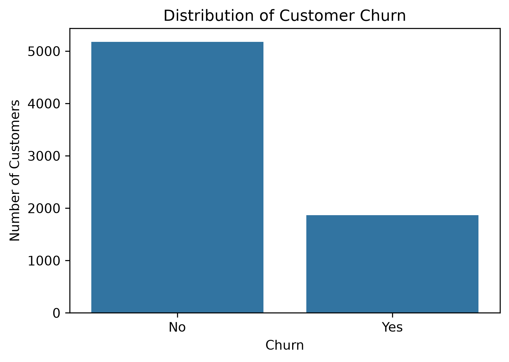
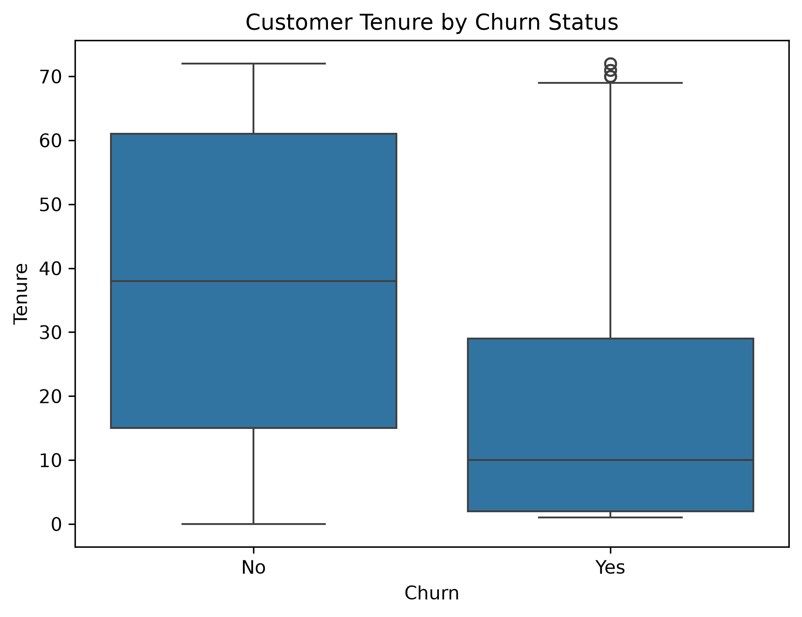
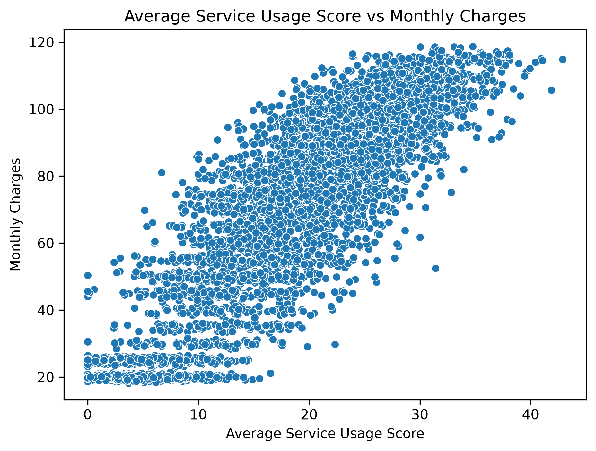
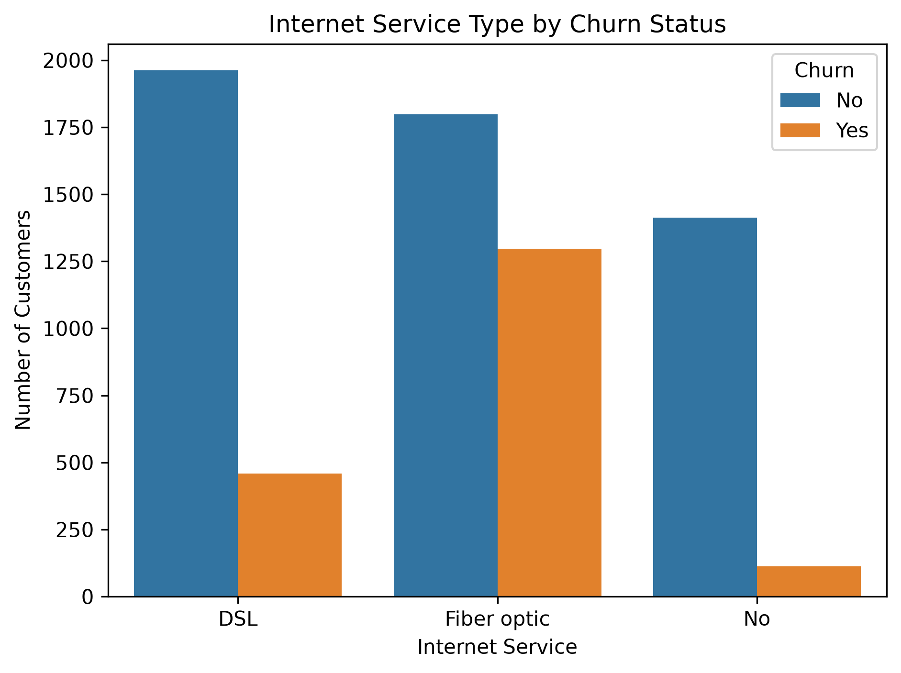
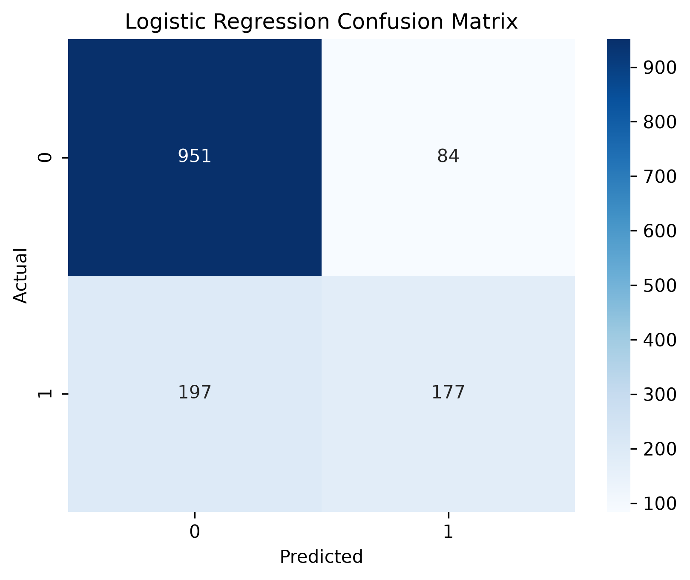
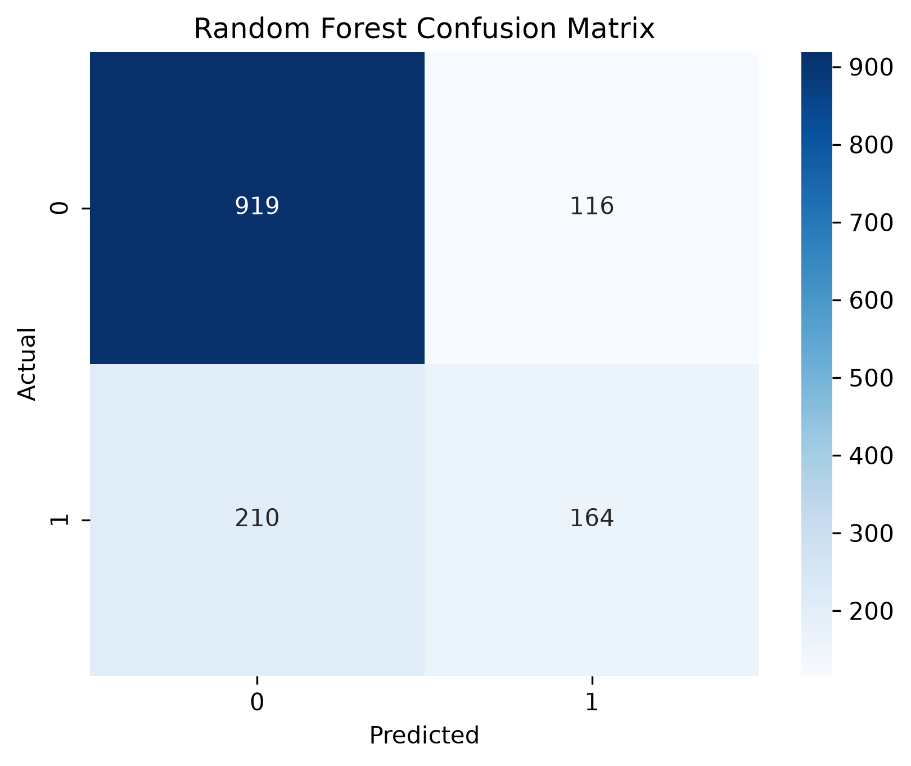

1. Problem Definition
Customer churn occurs when a customer stops using a company's services. For telecommunications companies, customer churn can result in lost revenue and increased costs associated with acquiring new customers.
The purpose of this project is to develop a machine-learning model that predicts whether a telecommunications customer will churn based on customer characteristics and service usage information.
Prediction Question
The target variable is Churn. The target was converted to 0 for no churn and 1 for churn. Because there are two possible outcomes, this is a binary classification problem.
A model that can identify customers who may churn could support telecommunications companies in developing customer-retention strategies. However, model predictions should be used as decision-support information rather than as automatic customer decisions.
2. Background and Context
Customer churn is an important issue in the telecommunications industry because losing customers can directly affect company revenue. Identifying customers who are likely to leave can help telecommunications companies better understand customer behavior and develop customer-retention strategies.
Machine learning provides methods for analyzing customer information and identifying patterns that may help predict whether a customer is likely to churn. Previous research has applied classification techniques such as Logistic Regression, decision trees, Random Forest, support vector machines, and other machine-learning approaches to telecommunications churn prediction.
In this project, Logistic Regression and Random Forest are compared to determine how well they identify customers who may churn.
3. Data Description
The dataset contains information about 7,043 telecommunications customers and 24 variables. Each row represents one telecommunications customer.
The variables include customer characteristics, account information, service information, charges, service-usage measures, and churn status.
Selected Predictor Variables
- tenure
- SeniorCitizen
- ServiceCount
- InternetScore
- AvgServiceUsageScore
- MonthlyCharges
Missing values were identified in MonthlyCharges and AvgServiceUsageScore. These missing numerical values were handled later using median imputation based only on the training data.
The dataset used in this project is based on the IBM Telco Customer Churn dataset. The version used for this analysis also contains additional derived service-usage features.
View Dataset Source4. Data Understanding and Exploration
Exploratory data analysis was performed to better understand the customers, the distribution of the churn target, and relationships between selected customer characteristics.
Customer Churn Distribution

The dataset contains 7,043 customers. Of these customers, 5,174 (73.46%) did not churn, while 1,869 (26.54%) churned. This shows that the target variable is imbalanced because the majority of customers belong to the non-churn group. Because of this imbalance, accuracy alone may not provide a complete picture of model performance. Precision, recall, and F1-score are also used to evaluate the models.
Customer Tenure by Churn Status

The tenure visualization compares the length of time customers have remained with the telecommunications company across the churn and non-churn groups. The distribution indicates differences in tenure between customers who churned and customers who remained.
This suggests that tenure may provide useful predictive information when building the churn classification models. The visualization shows an association and should not be interpreted as evidence that tenure causes churn.
Monthly Charges by Churn Status

This visualization compares monthly charges for customers who churned and customers who did not churn. The distributions show variation in monthly charges across the two groups, indicating that MonthlyCharges may contain useful information for predicting customer churn.
Average Service Usage Score and Monthly Charges

The scatter plot compares customers' average service usage scores with their monthly charges. The points show considerable variation, indicating that customers with similar service usage scores can have different monthly charges.
The plot does not show a simple one-to-one relationship between the two variables. However, it is useful for understanding how these customer characteristics are distributed before they are included in the machine-learning models.
Internet Service and Churn

The bar chart compares churn outcomes across the different InternetService categories. The distribution of churn is not the same across all internet-service groups, suggesting that internet-service characteristics may contain useful information for understanding customer churn.
The visualization shows an association only and does not demonstrate that a particular type of internet service causes customers to churn.
Summary Statistics
Customer tenure ranges from 0 to 72, with an average of approximately 32.37. Monthly charges average approximately $64.81 and range from $18.25 to $118.75.
Customers have an average ServiceCount of approximately 2.94, while the average service usage score is approximately 16.69. These results show variation in customer account history, monthly charges, and service usage.
5. Data Preparation and Feature Selection
The Churn target variable was converted from Yes/No values to binary values, where 1 represents churn and 0 represents no churn.
Six predictor variables were selected for model development: tenure, SeniorCitizen, ServiceCount, InternetScore, AvgServiceUsageScore, and MonthlyCharges.
The data were divided into an 80% training set and a 20% testing set. Stratification was used so that the churn distribution remained similar in both sets.
Missing numerical values were handled using median imputation. To prevent data leakage, the medians were calculated using only the training data and then applied to both the training and testing sets.
Numerical predictors used by Logistic Regression were standardized using StandardScaler. The scaler was fitted only on the training data and then applied to the testing data.
6. Baseline and Model Development
Baseline Model
A baseline classifier using the most frequent class was created to provide a benchmark for evaluating the machine-learning models.
Logistic Regression
Logistic Regression was selected because it is commonly used for binary classification problems and provides interpretable coefficients. Standardized predictor variables were used to train the model.
Random Forest
Random Forest was selected as the second classification model. Random Forest combines multiple decision trees and can capture nonlinear relationships and interactions among predictors.
7. Model Evaluation and Selection
The baseline model, Logistic Regression, and Random Forest were evaluated using accuracy, precision, recall, and F1-score.
| Model | Accuracy | Precision | Recall | F1-Score |
|---|---|---|---|---|
| Baseline | 73.46% | 0% | 0% | 0% |
| Logistic Regression | 80.06% | 67.82% | 47.33% | 55.75% |
| Random Forest | 76.86% | 58.57% | 43.85% | 50.15% |
The baseline model achieved an accuracy of 73.46%, but its precision, recall, and F1-score were zero because it predicted only the majority non-churn class.
Logistic Regression achieved an accuracy of 80.06%, precision of 67.82%, recall of 47.33%, and an F1-score of 55.75%. Random Forest achieved an accuracy of 76.86%, precision of 58.57%, recall of 43.85%, and an F1-score of 50.15%.
Although Logistic Regression performed better, its recall of 47.33% means that the model still failed to identify more than half of the customers who actually churned. This is an important limitation of the model.
8. Model Interpretation and Insights
Logistic Regression Confusion Matrix

The Logistic Regression model correctly predicted 951 customers who did not churn and 177 customers who did churn. It incorrectly predicted 84 non-churn customers as churn customers and failed to identify 197 customers who actually churned.
Random Forest Confusion Matrix

The Random Forest model correctly predicted 919 customers who did not churn and 164 customers who did churn. It incorrectly predicted 116 non-churn customers as churn customers and failed to identify 210 customers who actually churned.
Comparing the confusion matrices, Logistic Regression produced fewer false positives and fewer false negatives than Random Forest. False negatives are particularly important because they represent customers who actually churned but were predicted not to churn.
Random Forest Feature Importance

The Random Forest feature-importance results show that tenure was the most influential predictor in this model, with an importance of approximately 29.94%. MonthlyCharges was the second most influential feature at approximately 28.02%, followed closely by AvgServiceUsageScore at approximately 26.34%.
InternetScore and ServiceCount contributed less to the model, while SeniorCitizen had the lowest feature importance among the selected predictors.
Feature importance represents predictive usefulness within this model and does not mean that these variables cause customers to churn.
Logistic Regression Coefficients

The Logistic Regression coefficients provide information about how each feature is associated with the model's prediction of customer churn while holding the other included features constant.
InternetScore has the largest positive coefficient (approximately 0.770), while MonthlyCharges also has a positive coefficient (approximately 0.375). SeniorCitizen has a positive coefficient of approximately 0.174, while AvgServiceUsageScore has a small positive coefficient.
In contrast, tenure has the largest negative coefficient (approximately -1.055). ServiceCount also has a negative coefficient of approximately -0.296.
Because the numerical predictors were standardized before fitting the Logistic Regression model, the coefficient magnitudes can be compared more meaningfully across the included features. These relationships are predictive associations and should not be interpreted as evidence of causation.
9. Limitations, Ethics, and Reflection
This analysis has several limitations. The machine-learning models are based only on variables available in the dataset, so other factors that may influence customer churn may not be represented.
The target variable is imbalanced, with fewer churn customers than non-churn customers. This can affect how effectively the models learn to identify customers from the smaller churn class.
Prediction errors also have practical consequences. A false negative occurs when the model predicts that a customer will remain when the customer actually churns. In a real telecommunications environment, this could cause a company to miss an opportunity to engage with a customer who may be considering leaving.
A false positive occurs when the model predicts churn for a customer who would actually remain. This could result in unnecessary retention efforts or resources being directed toward that customer.
The model should therefore be viewed as a decision-support tool rather than a system that should make customer decisions automatically. Predictions should be interpreted alongside additional customer and business information.
The results identify predictive relationships in this dataset and do not establish that any feature causes customer churn.
Future work could examine additional customer characteristics, perform hyperparameter tuning, compare additional classification algorithms, and investigate methods for addressing class imbalance.
10. Code and Transparency
The complete Python code used for data preparation, exploratory data analysis, machine-learning model development, evaluation, and interpretation is available in the Jupyter Notebook and GitHub repository.
View Jupyter Notebook View GitHub Repository Return to PortfolioAI Usage Disclosure
OpenAI ChatGPT (GPT-5.6 Sol) was used as a support tool during this project. It was used to help organize the project workflow, troubleshoot and explain Python code, explain machine-learning concepts and evaluation metrics, and improve the clarity and organization of written interpretations.
The machine-learning code was executed in the Jupyter Notebook, and the resulting outputs, visualizations, and model-performance results were reviewed before being included in the final project.
References
Ahmad, A. K., Jafar, A., & Aljoumaa, K. (2019). Customer churn prediction in telecom using machine learning in big data platform. Journal of Big Data, 6, Article 28. https://doi.org/10.1186/s40537-019-0191-6
Huang, B., Kechadi, M. T., & Buckley, B. (2012). Customer churn prediction in telecommunications. Expert Systems with Applications, 39(1), 1414-1425. https://doi.org/10.1016/j.eswa.2011.08.024
Sikri, A., Jameel, R., Idrees, S. M., & Kaur, H. (2024). Enhancing customer retention in telecom industry with machine learning driven churn prediction. Scientific Reports, 14, Article 13097. https://doi.org/10.1038/s41598-024-63750-0